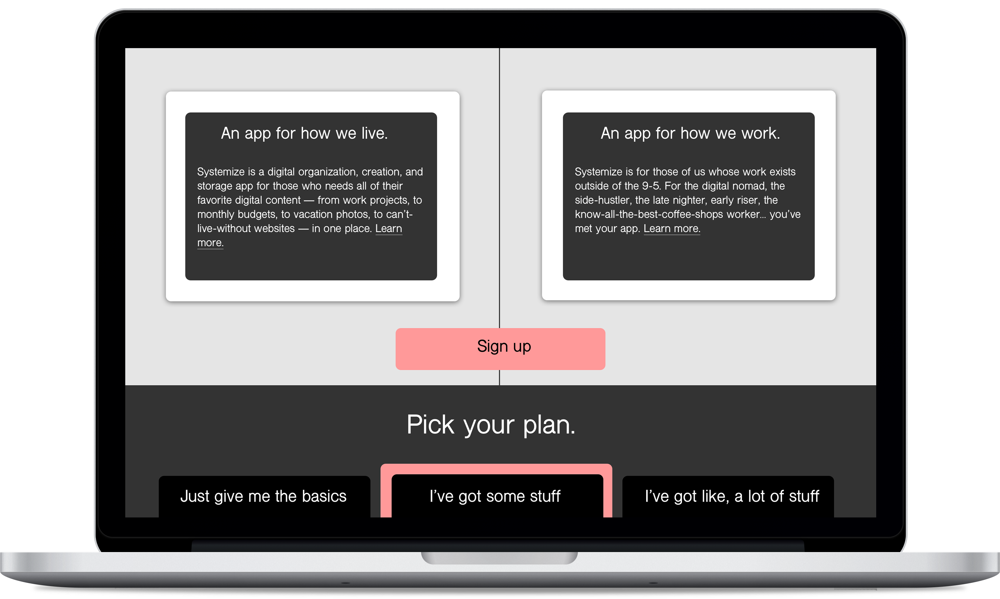

Systemize
Systemize is a cloud-based organization and storage app for the user who needs all of their favorite digital content - from work, to personal, to social, to financial - in one place. It's for those whose work exists outside of the standard 9-5, for whom the difference between work and life is fluid.
Design Role
UX Design
UX Writing
Visual Design
Branding & Identity
Deliverables
User Survey
User Personas
Competitive Analysis
Branding & Identity
User Stories & Flows
Wireframes
High-Fi Mockups
User Testing
Prototype
Tools Used
Sketch
Figma
Adobe Photoshop
InVision
Google Forms
The Problem
The initial problem began with an opportunity: the digital storage and organization space is still relatively young and not overly crowded, meaning there may be room for another competitor that can meet the needs of more users. The app had to combine features from a variety of other competitors in the space, specifically: save content from the web; upload files from a computer or mobile device; create content, such as notes or documents; and organize content. To fill where other apps were falling short, the new app could also offer the ability to share and collaborate, if this was truly an unmet need of users.
The Solution
Systemize takes the qualities of other apps that users know and love, and combines them into one, single place. This allows users to create, organize, and store all of their favorite digital content into just one app. Add in the option of large storage capabilities and real-time work collaboration, and you have an app that meets the needs of the modern user. Finally, most features of the app are free, and users can opt into all capabilities and increased storage for $4.99/month, and all capabilities and the maximum storage for $9.99/month
The Design Process
From user research to final design and all the steps in between, the following walks through each step of the design process for Systemize.
Getting to know the user.
The Survey
I surveyed 21 users in May 2019. My goals were to ascertain what gaps there were in the current market based on the following questions: what apps users are currently using, what they liked about those apps, and what capabilities did they feel were missing?
The Key Takeaway
Users do not currently have one singular place to store, organize, create, and collaborate on their favorite digital content. They are interested in storing and organizing content for both work and personal, and need an app that can accommodate that.
The Results
Most respondents use multiple apps
48% use for work and personal
57% want to organize content
57% want to save content
52% want to share content
86% want to collaborate in real-time
55% currently pay for storage
35% would pay $5/month for storage
Understanding the competition.

Strengths: The app is highly visual, popular, and free. It has a simple onboarding process, easy social sharing capability, and can be accessed across various devices.
Weaknesses: The app is only for images, has narrow organization categories, and images can be saved only on the app.
Could lead in innovation in the organizating and social media space.
Opportunities: Pinterest could allow for more content than just images, and as a popular app for social sharing, it could lead in innovation in the organizing / social media space.
Threats: Another social media organization app providing more for users; few changes to the app since its launch could lose users interested in more innovative experiences.
Strengths: Google Drive has high name recognition; free storage up to 15GB; the ability to create and store content; and the ability to easily share items.
Weaknesses: Content created and shared can only be accessed by others with a Google account; limited organization options; not a strong mobile interface.
Could create a better social sharing experience.
Opportunities: Could be a leader in innovation tool due to its name recognition; could create a better social sharing experience; and offer more organization solutions.
Threats: Other competitors, especially in the work-specific space; users may want something that offers more features; and privacy is a concern.
Strengths: The app can easily be used across various devices; content can be shared with others with a Dropbox account; content is easily searchable.
Weaknesses: Content can only be organized using folders; there is no option to work in real-time across teams; and free accounts are limited to only 2GB.
Could offer a stronger brand and a clearer target audience.
Opportunities: Dropbox could offer more organization tools; include more of a social sharing component; and could have a stronger brand and a clearer target audience.
Threats: Other competitors in the space doing the exact same thing; and importantly, the extremely limited free space makes competitors more attractive.
Summary of opportunity.
From the analysis of three major competitors in the digital storage and organization space, it became clear that there is room for a competitor to succeed in the space who combines some of the best features from all apps, but who can differentiate itself from the others in branding, messaging, and attributes.
Branding & Identity
Logo
Calls to Action
Color Palette
Typography
Desktop
Mobile
UX Writing
Conversational and tailored to the target customer, UX writing is just as important to get right as the visual design.
User Testing
I tested users three times during the development of both the mobile and desktop app. First after the wireframes, second after the initial visual design, and finally for specific design choices.
Through user testing, I learned I needed to include descriptions for symbols in the headings to help guide users. I needed to also include a clear way for users to sort through their files, folders, and groups, and this prompted me to add the "Organize By" dropdown menu. Finally, from user testing, I moved from a color palette of two types of pinks to just one. This was based on preference testing. Finally, I created both a light and dark option, a decision that also came out of user testing.
Final Prototypes
Conclusion
The user survey at the beginning was crucial to understanding what users were looking for with this kind of an app in order to make the project successful. I was surprised to learn that there were many opinions about storing and organizing digital content, which made me realize how critical these tools really are to our everyday lives.
One of my assumptions, which proved to be correct, was that users needed options for organizing and storing content beyond work files and projects. This led me to understand that the current branding of many of the leading apps in the space were limited in their scope and ability to meet the needs of users, which is why users tend to use multiple storage apps. This homogeneity led me to the decision to make something that looked and felt fresh and different, but that would have as its basic core features options that meet the needs of the majority of users.